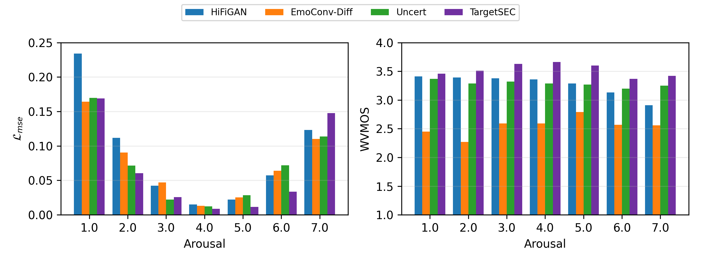

1 · calm one utterance, seven levels 7 · activated
Speech emotion conversion
TargetSEC
Move a recorded utterance to a target arousal level without changing what was said or who said it — by generating a style vector that conditions the decoder, rather than the spectrogram itself.
Hasso Plattner Institute / University of Potsdam
The idea
Speech emotion conversion changes the emotion of an utterance while keeping its words and its speaker. On acted corpora this is comparatively easy. On in-the-wild podcast speech — non-parallel, noisy, unevenly recorded — existing fixed-duration systems tend to land at one of two extremes: shift the emotion and wreck the audio, or keep the audio clean and barely shift the emotion.
TargetSEC separates the two problems. A HiFi-GAN decoder takes three inputs: content, speaker, and a 128-dimensional style vector. During training the style vector comes from a mel style encoder reading the source audio. At inference that encoder is removed and a latent diffusion model generates the style vector in its place, conditioned on speaker identity and a continuous target arousal.
![Two panels. (a) The TargetSEC framework: a source waveform
feeds a speaker encoder, a content encoder and a style encoder, whose outputs are summed and
passed to a decoder producing converted audio. At inference a dashed path replaces the style
encoder with a latent diffusion model driven by conditioning embeddings. (b) Training of
that diffusion model: emotion and speaker encoders read the source waveform and meet at a
cross-attention step feeding a U-Net, which denoises toward the style encoder's output; the
style encoder is detached from the gradient.](architecture.png)
Listen
Five utterances from the MSP-Podcast Test1 partition, each converted to all seven arousal levels by TargetSEC and by the HiFi-GAN baseline. The sources were drawn at random by fixed seed before any output was heard, and these are the first five of that draw — not a selection made after listening. Clips come verbatim from the full test-set evaluation behind the numbers below, and all are RMS-normalised to −26 dBFS so you are not hearing a loudness difference.
Results
Full MSP-Podcast Test1: 16,903 utterances × 7 target levels = 118,321 conversions per system. Training used the official Train partition with Development held out for checkpoint selection.
| System | Dur. pred. | WVMOS ↑ | WER ↓ | Lmse ↓ | Labs ↓ |
|---|---|---|---|---|---|
| EmoConv-Diff | – | 2.56 | – | 0.072 | 21.0% |
| Uncert | yes | 3.30 | – | 0.069 | 20.0% |
| HiFi-GAN (our reimpl.) | – | 3.27 | 20.7% | 0.087 | 24.5% |
| TargetSEC | – | 3.52 | 20.4% | 0.065 | 20.9% |
Two measures that share no model with the training objective: on an independent IEMOCAP-trained recogniser, the rank correlation between requested arousal and high-arousal posterior is 0.450 for TargetSEC against 0.325 for the baseline. ECAPA-TDNN speaker similarity is 0.351 ± 0.12, against 0.370 for the baseline and a random-pair floor of 0.05.
Aggregating the 118,321 matched pairs by speaker, TargetSEC has the lower arousal error for 58 of 60 Test1 speakers (paired t-test, p < 10−19). This establishes the gap on this test set for these models; it is not a claim about variance across training seeds.

Where it fails
Level 7 is the one place TargetSEC loses, and it loses to every system compared: 0.148 Lmse against 0.110–0.123 for the others. The cause is structural rather than a tuning problem.
Extreme arousal in real speech is carried substantially by speech rate — people speed up when agitated and slow down when subdued. TargetSEC maps a fixed-duration utterance to a fixed-duration utterance: it can change timbre, energy and spectral shape, but it cannot compress or stretch the utterance in time. Everything available to it saturates before the top of the scale, which is visible in the figure above as the error curve turning back up.
It is also why the duration-predicting Uncert baseline, otherwise behind on both naturalness and conversion error, holds up better at the extremes. Adding a duration predictor is the obvious next step, and this is an honest limitation of the fixed-duration framing rather than something a longer training run would fix.
What each piece contributes
| Style prior | Speaker cond. | WVMOS ↑ | Lmse ↓ | Labs ↓ |
|---|---|---|---|---|
| MLP regression | – | 3.80 | 0.081 | 23.7% |
| MLP regression | yes | 3.85 | 0.080 | 23.5% |
| Latent diffusion | – | 3.63 | 0.067 | 21.6% |
| Latent diffusion | yes | 3.52 | 0.065 | 20.9% |
Replacing regression with diffusion and adding speaker conditioning each lower the conversion error, and WVMOS moves the other way. That ordering is the point: a deterministic MLP collapses toward the corpus mean style, which vocodes cleanly and converts poorly. Higher WVMOS here indicates a safer, less committed prediction, not a better conversion.
Code
train/ the four pipeline stages, the baseline, the pre-flight loss gate eval/ benchmarks, WVMOS, WER, speaker similarity, IEMOCAP, significance tools/ figures, grid search, regeneration utilities tests/ ten checks: loss gradients, mel equivalence, the split guard src/ dataset.py Train / Development / Test1 loaders, split guard synthesizer_style_module.py Stages 1-2: decoder + mel style encoder diffusion_module_fixed.py Stage 4: the latent style LDM decoder/decoder.py HiFi-GAN generator, MPD + MSD discriminators emotion/emotion_encoder.py Frozen SER, differentiable wrapper, CCC
Training needs MSP-Podcast v1.10, obtained under licence from the University of Texas at Dallas. Checkpoints are not in the repository; the paths they are expected at are listed in the manifest. See github.com/Conscht/TargetSEC.
Citation
@article{auga2026targetsec,
title = {TargetSEC: Plug-and-Play In-the-Wild Speech Emotion Conversion
via Arousal-Conditioned Latent Style Diffusion},
author = {Auga, Constantin Alexander},
year = {2026},
eprint = {2606.07293},
archivePrefix = {arXiv}
}